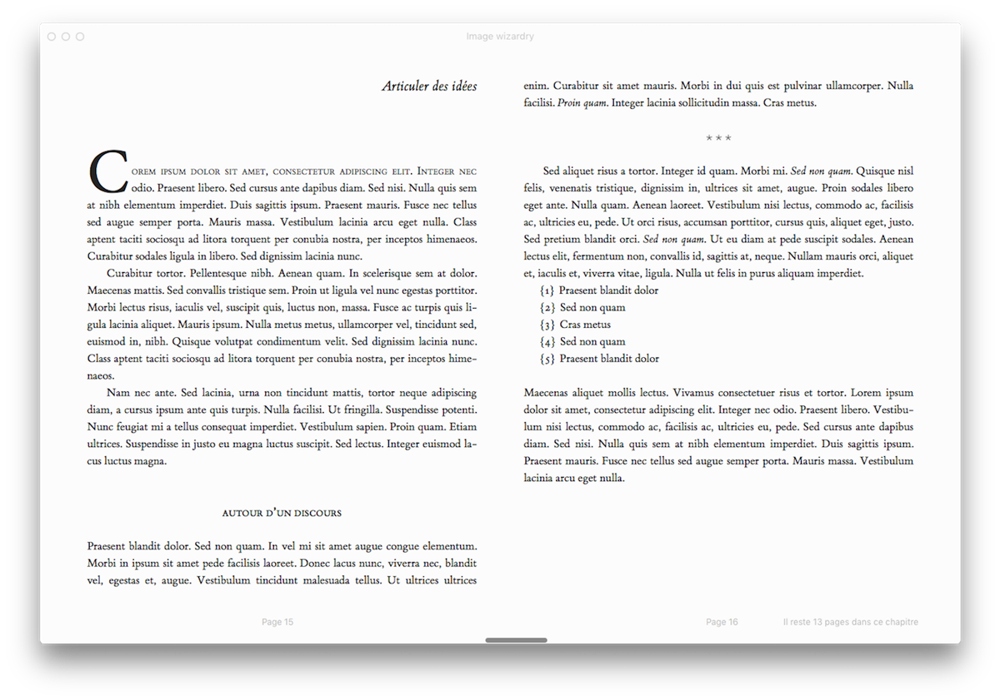
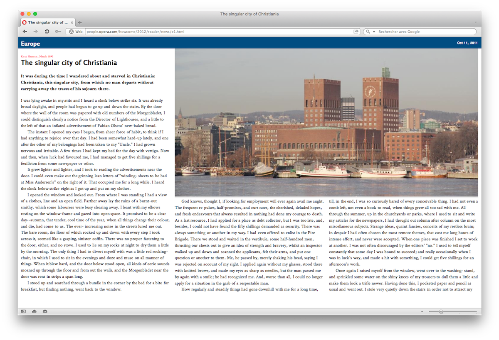
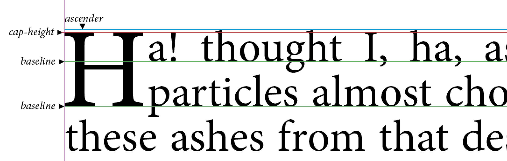
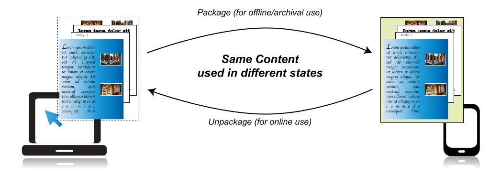
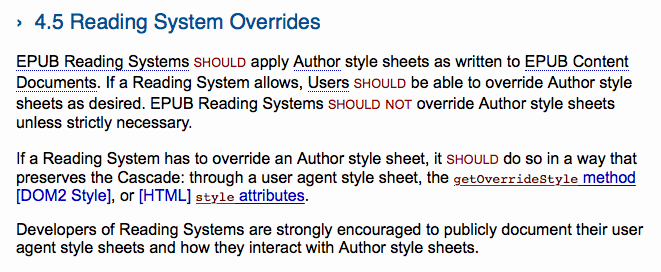

Why the web
should take a look
at eBooks
Note
Those slides have been extended so that they can serve as a starter kit.
Further details are simply provided and do not alter what’s been said during my talk.

Documents ?
DPUB IG + IDPF = ?
Our culture
We didn’t learn anything from the web
✅ Unsemantic tag soup
LES NUITS MEXICAINES
I
LAS CUMBRES
Nulle contrée au monde n'offre, aux regards éblouis des voyageurs, de plus charmants paysages que le Mexique; entre tous, celui de las Cumbres ou des cimes est sans contredit un des plus saisissants et des plus gracieusement accidentés.
✅ Fixed layout
Some popular DTP app’s fixed-layout export
This book
Which translates to…
This book✅ Fragmentation
✅ Proprietary formats and tools︎
✅ Made for [insert platform]
(The previous popup says that some interactions might not work with a mouse or a trackpad because the book was made for iBooks on iOS.)
✅ Quite a few brutal specs
✅ IE 6
eBook Dev ?
- 2475 Github repos
- 2 active frameworks
- Where’s Waldo’s contributions
- DIY Dev Tools and docs
Here comes the stuff you might find interesting…
CSS Multi-column Layout Module
http://www.idpf.org/epub/31/spec/epub-contentdocs.html#sec-css-content-conf
Note
Keep in mind that some Reading Systems will not support all desired features of CSS. In particular, the following are known to be problematic:
- Reading System-induced pagination can interact poorly with style sheets. Pagination is sometimes done using columns, which can result in incorrect values for viewport sizes. Fixed and absolute positioning are particularly problematic.
- Some types of screens will not support animations and transitions.
Container Queries…
CSS Figures
Opera Reader, late 2011
@media -o-paged {
html {
height: 100%;
overflow: -o-paged-x;
}
article {
overflow: -o-paged-x-controls;
columns: 25em;
}
figure {
column-span: -o-integer(2);
float: -o-top-corner;
}
}Links for thought
Latin Text Layout and Pagination
- Grids
- Regions 2.0
- Baseline
- OpenType features
- Font Metric API (Houdini)
Links for thought
Portable Web Publications
- Archives
- Semantic inflexions
- Resources’ relationships
- Annotations
- User settings
One remark about user settings…
http://www.idpf.org/epub/31/spec/epub-contentdocs.html#sec-css-rs-overrides
4.5 Reading System Overrides
EPUB Reading Systems should apply Author style sheets as written to EPUB Content Documents. If a Reading System allows, Users should be able to override Author style sheets as desired. EPUB Reading Systems should not override Author style sheets unless strictly necessary.
If a Reading System has to override an Author style sheet, it should do so in a way that preserves the Cascade: through a user agent style sheet, the getOverrideStyle method [DOM2 Style], or [HTML] style attributes.
Developers of Reading Systems are strongly encouraged to publicly document their user agent style sheets and how they interact with Author style sheets.
In a way that preserves the cascade…
*, * *, *[class], *[class] *[class] {
prop: value !important;
}Links for thought
Millions and millions
of PDF files online
(80% of non-HTML documents)
We have not finished with documents yet.
Who’s who
People you should follow…
- Bill McCoy (@billmccoy)
- Ivan Herman (@ivan_herman)
- Dave Cramer (@dauwhe)
- Tzviya Siegman (@TzviyaSiegman)
- Hadrien Gardeur (@Hadrien)
- Laurent Le Meur (@lmrlaurent)
- Romain Deltour (@rdeltour)
- Daniel Weck (@DanielWeck)
- Matt Garrish (web)